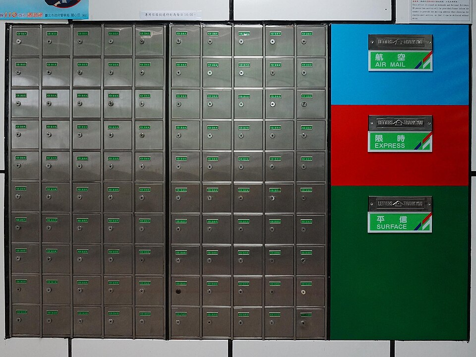

Módulo 03 — Estructuras de Datos
Python tiene 4 estructuras integradas fundamentales:
| Estructura | Sintaxis | Mutable | Ordenado | Permite duplicados |
|---|---|---|---|---|
list | [1, 2, 3] | ✅ | ✅ | ✅ |
tuple | (1, 2, 3) | ❌ | ✅ | ✅ |
set | {1, 2, 3} | ✅ | ❌ | ❌ |
dict | {"k": "v"} | ✅ | ✅ (3.7+) | claves únicas |
Listas (list)

Secuencia mutable y ordenada. La estructura más usada.
frutas = ["manzana", "pera", "uva"]
frutas[0] # 'manzana' (índice 0)
frutas[-1] # 'uva' (índice negativo desde el final)
frutas[1:] # ['pera', 'uva']
frutas[::-1] # invertida
len(frutas) # 3
"pera" in frutas # TrueMétodos importantes
frutas.append("kiwi") # agrega al final
frutas.insert(0, "banana") # inserta en índice 0
frutas.remove("pera") # elimina el primero que matchee
frutas.pop() # elimina y devuelve el último
frutas.pop(0) # elimina y devuelve el del índice 0
frutas.sort() # ordena in-place
sorted(frutas) # devuelve copia ordenada
frutas.reverse() # invierte in-place
frutas.count("uva") # cuántas veces aparece
frutas.index("uva") # índice de la primera aparición
frutas.extend(["mango", "pomelo"]) # agrega varios
frutas.clear() # vacía la listaCopiar listas (cuidado)
a = [1, 2, 3]
b = a # mismo objeto — modificar b modifica a
b = a.copy() # copia superficial (recomendado)
b = a[:] # también copia superficial
import copy
b = copy.deepcopy(a) # copia profunda (para listas anidadas)List comprehensions
cuadrados = [x**2 for x in range(10)]
pares = [x for x in range(20) if x % 2 == 0]
matriz = [[i*j for j in range(3)] for i in range(3)]Tuplas (tuple)
Secuencia inmutable y ordenada. Útil para datos que no deben cambiar.
punto = (3, 4)
x, y = punto # unpacking
coords = 1, 2, 3 # paréntesis opcionales
sola = (5,) # tupla de 1 elemento (la coma es obligatoria)¿Cuándo usar tuple vs list?
- Tuple: datos heterogéneos fijos (registro), claves de dict, retornar múltiples valores
- List: colecciones homogéneas que crecen/cambian
Named tuples (legible)
from collections import namedtuple
Punto = namedtuple("Punto", ["x", "y"])
p = Punto(3, 4)
p.x # 3Conjuntos (set)
Colección no ordenada y sin duplicados. Operaciones de teoría de conjuntos.
s = {1, 2, 3, 2} # {1, 2, 3}
vacio = set() # NO {} — eso es un dictOperaciones
a = {1, 2, 3}
b = {3, 4, 5}
a | b # unión: {1,2,3,4,5}
a & b # intersección: {3}
a - b # diferencia: {1,2}
a ^ b # diferencia simétrica: {1,2,4,5}
a.add(4)
a.discard(99) # no falla si no está
a.remove(99) # KeyError si no está
3 in a # O(1) — mucho más rápido que listEliminar duplicados de una lista
lista = [1, 2, 2, 3, 3, 4]
unicos = list(set(lista)) # [1, 2, 3, 4] (orden no garantizado)Diccionarios (dict)
Pares clave→valor. Hash table. Acceso O(1) promedio.
persona = {"nombre": "Ana", "edad": 30, "activo": True}
persona["nombre"] # 'Ana'
persona.get("email", "no definido") # devuelve default si no existe
persona["email"] = "ana@example.com" # agrega/actualiza
del persona["activo"] # elimina
"edad" in persona # TrueIteración
for clave in persona: # solo claves
print(clave)
for valor in persona.values():
print(valor)
for clave, valor in persona.items():
print(f"{clave} = {valor}")Métodos
persona.keys() # vista de claves
persona.values() # vista de valores
persona.items() # vista de pares (k, v)
persona.update({"edad": 31, "ciudad": "BA"})
persona.pop("edad")
persona.setdefault("hobby", "ninguno") # solo si no existeDict comprehensions
cuadrados = {n: n**2 for n in range(5)}
# {0: 0, 1: 1, 2: 4, 3: 9, 4: 16}
invertido = {v: k for k, v in persona.items()}Claves válidas
Cualquier objeto hashable: strings, números, tuplas (de hashables). Listas y dicts NO sirven como claves.
Estructuras especiales (collections)
from collections import Counter, defaultdict, deque, OrderedDict
# Counter — contar frecuencias
votos = Counter(["a", "b", "a", "c", "a", "b"])
votos.most_common(2) # [('a', 3), ('b', 2)]
# defaultdict — defaults automáticos
grupos = defaultdict(list)
grupos["frutas"].append("manzana") # no falla si no existe
# deque — cola/pila eficiente por ambos lados
cola = deque([1, 2, 3])
cola.appendleft(0)
cola.popleft()Ejercicios
- Eliminar duplicados de
[1, 2, 2, 3, 4, 4, 5]preservando orden (hint: usar dict de Python 3.7+) - Contar la frecuencia de cada palabra en una frase
- Invertir un diccionario
{"a": 1, "b": 2}→{1: "a", 2: "b"} - Dado
[(1,"a"), (2,"b"), (3,"c")], separarlo en dos listas: números y letras - Crear un set con las letras únicas de una palabra
🧠 Autoevaluación rápida
Respondé sin mirar arriba. Cada pregunta te explica el porqué.
1. ¿Cómo se crea un set vacío?
Ojo con la trampa:
{} crea un dict vacío, no un set. Para un set vacío hay que usar el constructor set(). Las llaves recién arman un set cuando tienen elementos sueltos: {1, 2, 3}.2. ¿Cuál de estos objetos sí puede usarse como clave de un diccionario?
Las claves de un dict tienen que ser hashables. Listas y sets son mutables, así que no lo son. Las tuplas son inmutables y, si sus elementos también son hashables, sirven perfecto como clave (por ejemplo, coordenadas).
3. Con a = [1, 2, 3] hacés b = a y después b.append(4). ¿Cómo queda a?
b = a no copia nada: los dos nombres apuntan a la misma lista, así que tocar una toca la otra. Para copiar de verdad usá a.copy() o a[:], y copy.deepcopy(a) si la lista tiene listas adentro.